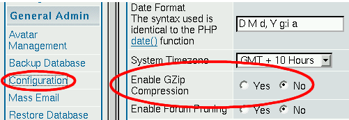

3.9. Common installation problems
Some of the most common installation problems of PHP-Nuke are discussed in the following subsections. In identifying the most common sources of problems and frustration, we hope to eliminate a good portion of the Help! posts in the various forums of the community. Feel free to post your own favourite to Chris' PHP-Nuke Forumfor inclusion in the next version of this HOWTO.
3.9.1. Test scripts
Before you start the ambitious undertaking of debugging your PHP-Nuke installation, you should download and run some tools that may shorten the search path and save you some headaches:
test.php
ConnectTest.php and
analyze.php
3.9.1.1. test.php
test.php is a “quick'n dirty” script to help you find out if you could connect to the database and how your PHP configuration looks like. Put the following lines in a file, name it test.php, upload it in the same directory where you have your config.php and tell your browser to open it (see Warning: Invalid argument supplied for foreach()):
<?php
include("config.php");
mysql_connect("$dbhost", "$dbuname", "$dbpass");
mysql_select_db("$dbname");
echo mysql_error();
phpinfo();
?> |
If everything is right, you will only see the PHP info. Otherwise, you will see a descriptive message of the error first (in the first line) and also the PHP info. You can use the output to determine various parameters of your PHP configuration, like version numbers, libraries, paths and variables. Whenever you ask yourself if you have feature X enabled, remember to run this small script and search its output for a string that describes the feature. You will most probably find the answer there. Conversely, if you don't find the answer in the output of test.php (i.e. the output of the phpinfo() function), you will probably not find it easily.
3.9.1.2. ConnectTest.php
The ConnectTest.php script from Humpa is a more elaborate test script that you can help with database connection problems. Download and save it with a .php ending (it comes with a .txt ending to prevent the web server from interpreting the PHP code in it). You should put the ConnectTest.php file in the PHP-Nuke root directory, i.e. in the same directory where also config.php is located. Then you just tell your browser to open it.
<?php
if($phpinfo=="phpinfo") {
phpinfo();
die();
}
require_once("config.php");
$dbcheck = mysql_connect("$dbhost", "$dbuname", "$dbpass");
if (!$dbcheck) {
echo mysql_error();
echo "<br><b>The Connection Test Script was unable to connect
to the MySQL server!<br>One or more of these variables are wrong in
your config.php:</b> <font color=purple><b>\$dbhost=\"<i>$dbhost</i>\",
\$dbuname=\"<i>$dbuname</i>\", and/or \$dbpass=\"*<i>hidden</i>*\"
</b></font><br>";
echo "<br>Now, please don't say that you <u>are</u> using the
correct values - say it to your mysql server, because that is who(what?)
is stopping you. : )<br>";
echo "Email your web host and ask them what to use for a mysql
username and password.<br>";
echo "PHP Manual, function:
<a href=\"http://www.php.net/manual/en/function.mysql-connect.php\"
target=\"_blank\">mysql_connect</a><br>";
echo "If you are the server, perhaps you just need to create
a mysql user instead of using your root user.<br>";
die("<br><a href=\"$_SERVER[PHP_SELF]?phpinfo=phpinfo\">
phpinfo</a>");
}else{
echo "<a href=\"$_SERVER[PHP_SELF]?phpinfo=phpinfo\">
phpinfo</a><br><br>";
echo "<font color=red><b>If everything looks good, but you
still have problems, get the ";
echo "<a href=\"http://nukecops.com/downloads-cat-7.htm\">
analyzer from NukeCops</a></b></font><br><br>";
echo "<b>Connection Test Script connected to your MySQL server
successfully!<br>";
echo "<br>\$dbuname = \"$dbuname\";<br>\$dbtype = \"$dbtype\";
<br>\$prefix = \"$prefix\";<br>\$user_prefix = \"$user_prefix\";<br>";
if (mysql_select_db($dbname)) {
echo "<br>Connection to your database \"
<font color=purple>$dbname</font>\" was also successful.<br>";
$result = mysql_list_tables($dbname);
if (!$result) {
print "DB Error, could not list tables\n";
print 'MySQL Error: ' . mysql_error();
die();
}
$i=0;
$stufftoprint = "";
while ($row = mysql_fetch_row($result)) {
$tablename = $row[0];
if($tablename == "".$prefix."_authors") {
$result4 = mysql_query("select aid from $tablename");
while(list($admin_name) = mysql_fetch_row($result4)) {
$admin_names .= "$admin_name, ";
}
}
$result3 = mysql_query("select * from $tablename");
$numFields = mysql_num_fields($result3);
$numRows = mysql_num_rows($result3);
$rows = "rows";
$fields = "fields";
if($numFields == 1) {$fields = "field";}
if($numRows == 1) {$rows = "row";}
$stufftoprint .= "Table: <font color=purple>$tablename
</font> ($numFields $fields / $numRows $rows)\n<br>";
$i++;
}
if($dbtype != "MySQL" AND eregi("mysql",$dbtype)) {
echo "<br><font color=red><b>But, you need to set </b>
</font><font color=purple><b> \$dbtype = \"MySQL\"; </b></font>";
echo "<font color=red><b> in your config.php!!!!!!!!</b></font><br>";
}
echo "<br>There are <font color=purple>$i tables</font> in your \"
<font color=purple>$dbname</font>\" database<br>";
echo "(by default, there are 89 fields in phpnuke 6.5 and 76 fields
in phpnuke 6.0)<br>";
if($i<66) {
echo "<br><font color=red><b>You don't seem to have all the
tables installed.<br>Get the ";
echo "<a href=\"http://www.nukeresources.com/modules.php?name=Downloads
&d_op=viewdownload&cid=79\">Web Installer</a> for your version of
phpnuke</b></font><br>";
}
echo "<br>These are the admin names (aid) in your nuke_authors
table: <font color=purple>$admin_names</font><br>";
echo "<br>Now check this list of tables with your nuke.sql file:<br><br>$stufftoprint</b>";
}else {
if(mysql_query("CREATE DATABASE $dbname")) {
echo "<br>Your database \"$dbname\" did not exist,
but this script just created it sucessfully<br>";
echo "Now, you need to get the appropriate
<a href=\"http://www.nukeresources.com/modules.php?name=Downloads
&d_op=viewdownload&cid=79\">";
echo "Web Installer from nukeresources.com</a>";
die();
}
echo "<br>However, the \"$dbname\" database does not exist.
If that is not the correct name, then put in the correct ";
echo "name for<br><font color=purple>
\$dbname =\"$dbname\";</font> (in your config.php)
<br>If you have not created the database yet, then ";
echo "create it. If you are not the server, then ask your
web host to create it for you.<br>";
echo "<br>Then, get the appropriate
<a href=\"http://www.nukeresources.com/modules.php?name=Downloads
&d_op=viewdownload&cid=79\">";
echo "Web Installer from nukeresources.com</a>";
}
}
?> |
3.9.1.3. analyze.php
The analyze.php script from Paul Laudanski (a.k.a. Zhen-Xjell) is the most elaborate from all the three script presented here. Rename the file to "analyze.php", transfer it to the same place that your config.php file is found and call it from your browser. For a preview of what it reports, run analyze.php for the nukecops site. The code has been successfully tested for Nuke versions 6.5B6, 6.5B5, 6.0, 5.6.
The script not only tests your MySQL database connection (see Figure 3-25), but also displays information on:
config.php settings
SMTP (mail server) settings
GD (graphics) library settings
Databases
Modules
Blocks
Notices
Ranks
Administrators and Moderators
php,ini settings
Security code
Recursive file listing along with resource permissions
It also checks for MySQL (see Figure 3-26) and PHP (see Figure 23-1) vulnerabilities and reports them to you if they need to be patched.
3.9.2. Warning: mysql_fetch_row(): supplied argument is not a valid MySQL result resource
You get this
Warning: mysql_fetch_row(): supplied argument is not a valid MySQL result resource in html/includes/sql_layer.php on line 286 |
This is a very general error. Most of the time it just means that you could not connect to the database (for whatever reason) and thus the result set you tried to fetch was not a “valid MySQL result resource”. You should try first to get a more descriptive error message. For this purpose, you must edit the "case" lines in the sql_layer.php file.
Example:This is the "case" that starts at line 286 in the nuke 6.5 sql_layer.php (for the line 286 error), at line 300 in the nuke 6.0 sql_layer.php (for the line 301 error message) - or line 285 in nuke 5.6 (for the line 286 error message):
case "MySQL":
$row = mysql_fetch_row($res);
return $row;
break;; |
Edit it like this:
case "MySQL":
if ($row = mysql_fetch_row($res)) {
return $row;
} else {
print (mysql_error());
}
break;; |
 | Please note: |
|---|---|
This will NOT fix your problem. But it will give a more descriptive message as to what the error cause is. |
See Warning: mysql fetch row: supplied argument is not a valid MySQL result resource and submit news problem.
3.9.3. Call to undefined function: message_die() in db.php line 88
This is the most “popular” error. It basically means that it couldn't connect to the database. You may get this error even if you did everything right, depending on the version you are using. The reasons are multiple:
Are you sure you downloaded *all* the files? Maybe some file is missing. Perhaps you wanted to save some bandwidth and omitted some crucial file or directory, or subdirectory.
You didn't enter "MySQL" as the dbtype in config.php (see Section 3.7). It must be exactly with a Capital M, a small y, and capital S, Q and L.
The code tries to select the database, but the database is not there. Create the database and populate it with tables (see Section 3.2.4).
You have some error in the config.php file (see Section 3.7). Double check that the username and password are correct. Don't forget, the " and ; are important. And DON'T remove the $ in front of the variables! If you used an editor like Notepad, Wordpad, or some editor that you are not 100% sure that works correctly, delete the config.php file, get a fresh copy and edit it with a decent text editor (see Chapter 11).
3.9.4. Error: Failed opening 'language/lang-.php' for inclusion
You either
didn't install the language files lang-xxx.php (like language/lang-english.php), or
you cannot connect to the database, so that the value of the default language could not be set and is empty (and that's why you get an error about lang-.php, instead of lang-english.php, or lang-french.php etc.). Try the small test script (see Call to undefined function: message die in db.php line 88):
<?php include("config.php"); mysql_connect("$dbhost", "$dbuname", "$dbpass"); mysql_select_db("$dbname"); echo mysql_error(); phpinfo(); ?>(see also Section 3.9.1), or
your include path information is missing some paths (like ".", the current directory), see Section 3.9.10.
3.9.5. Fatal error: Failed opening required 'includes/sql_layer.php'
Your web server could not open includes/sql_layer.php. There are many reasons for this (Fatal error: Failed opening required includes/sql layer.php):
The file is really not there, something went wrong with the installation - reinstall (see Chapter 3).
The file is there but the web server does not have the right to open it - check permissions (see Section 3.2.3).
There is a .htaccess file somewhere in the directory hierarchy that denies access to you.
There is something wrong with the include path of the PHP interpreter (see Section 3.9.10).
You might see more information on the cause of your problem if you have access to the web server access and error logs.
3.9.6. Sorry, such file doesn't exist...
Whenever you try to access a module (or simply your site), you ge the error (see, for example: Humpa Chess Install and http://www.karakas-online.de/forum/viewtopic.php?t=348):
Sorry, such file doesn't exist... |
Of course, following a classic attitude to error handling, it doesn't tell you which file does not exist... We thus have to search the code to see what is happening:
We thus have to search the code to see what is happening:
The error
Sorry, such file doesn't exist... |
comes from mainfile.php. There are exactly three occurences of it in the code. In all three the pattern is the same (see Sorry, such file doesn't exist...):
First it is tested if you are a normal user, an administrator, if the module is active etc., depending on the circumstances.
Then, a test is made on the existence of $modpath. Upon its failure, you get the error above:
$modpath .= "modules/$name/$file.php";
if (file_exists($modpath)) {
include($modpath);
} else {
die ("Sorry, such file doesn't exist...");
} |
$modpath, in turn, is the path to the module in question. As you can see in the code snippet yourself, it depends on the value of $name, which is the name of the module, and $file, which is...well, for this you have to scroll up to the start of mainfile.php. There, we read
if (!isset($file)) { $file="index"; } |
which in plain english says "if the variable $file is NOT set, set it to 'index'".
Putting all the puzzle pieces together, we arrive to the conclusion that the file
modules/YourModule/index.php |
is not there.
There are various things you should check and all have to do with trying to find out why your web server cannot find the index file of the module you are trying to access:
Is the index.php file really there in the modules/YourModule folder?
Did you set up the permissions (Section 3.2.3, Section 23.4.4) correctly? Does your web server have read access to that folder and file?
Is there a (hidden) .htaccess file (Section 25.4) somewhere in your document tree that prevents the web browser from accessing that file?
Did you install all files? You have to dive in the docs of that module to see if you are missing anything.
Check if
http://www.yoursite.com/modules/YourModule/index.php
returns an error. Substitute YourModule with the name of the module that is giving you the headaches.
If this is a module you downloaded and installed yourself (as opposed to a preinstalled one, see Section 6.1): Did you really follow the instructions? Did you download the right file? Did you extract it in the modules folder?
Did you see the module in the list of modules and did you activate it (Section 7.1 and Figure 3-27)?
3.9.7. Warning: setlocale(): Passing locale category name as string is deprecated
All of a sudden, you get tons of warnings like this one:
Warning: setlocale(): Passing locale category name as string is deprecated. Use the LC_* -constants instead. in /home/chris/public_html/nuke/mainfile.php on line 565 |
The problem comes suddenly after your ISP has upgraded to a newer version of PHP (without telling you, of course! 
To fix this, remove the quotes that are around "LC_TIME" in the line/file mentioned in the error message displayed (see Warning: setlocale(): Passing locale category name as string is deprecated and News article: Warning: setlocale(): Passing locale category name as string is deprecated.).
 | Attention: repetitious error! |
|---|---|
You may get this error again and again. You will have to do the above change in *all* occurences of the LC_something constants! I once counted 17 of them, scattered all around the PHP-Nuke files... |
3.9.8. Security code is not showing up
You just installed PHP-Nuke for the first time, created a super user, and you can't log in because the security code graphic (see Figure 3-28) is coming up as a dead image.
This is a frequent error, but it seems that the reasons (and cures) may be multiple (see Security code graphic not showing up, security image stopped working):
You changed something in the language files and put comments - remove the comments.
You (or your ISP) don't have the GD library loaded. To find out if you have the GD library loaded, run a test script like test.php (see Section 3.9.1.1), ConnectTest.php (see Section 3.9.1.2) or analyze.php (see Section 3.9.1.3). The first two display the output of the PHP phpinfo() function directly ( Figure 3-29), analyze.php will display an only slightly different information box on GD (Figure 3-30). If you are on Windows 2000, read how to install GD on a Win2K box.
The gfx function in admin.php is not always working fine. You could try to put it in a separate file and change the call from admin.php to the new file. See Humpa's posting in Admin Security login jpeg not showing for an example.
Activate (or reactivate) the Your Account module. If your Admin's security code works, but the others don't (showing an read X mark for others), then you may want to set the Your Account module as viewable by all visitors (see PhpNuke 6.5 Security Code Problem).
For more thoughts on this problem, read Humpa's PHP-Nuke FAQ on the security code.
If you want to use a PNG or GIF image for the security code, consult the solution in Using a png or gif for security code image. If you want to display the security code as text, rather than an image, see security code in plain text format - but then there is no point to it (the idea is to display an image that makes automatic number recognition difficult to robots), then you can disable it just as well.
3.9.8.1. How to bypass the security code
Another approach could be to bypass the security code altogether. This is probably the only option you have (unless you are willing to display it as plain text - see the links at the end of this section for this), if your ISP refuses to load the GD library: without GD, no security code image - without security code image, you cannot enter anything in the security code field, and you get an “Access denied” error.
Here is how you disable the security code:
Find the 7 occurences of:
extension_loaded("gd") |
For the Admin login, there is one in the admin.php, and one in the auth.php. For Users, there will be five in the modules/Your_Account/index.php (and there might be one in the block-Login.php, and/or one in the block-User_Info.php, if they are modified). Replace all of the occurances with this:
$user == "whatever" |
Follow the above instruction exactly.
| Be careful not to introduce syntax errors! |
|---|---|
Changes like the last one (bypassing the security code) require extreme caution on your part. All too big is the risk of introducing new errors, while trying to correct old ones! If you get an error, it does't mean the solution ceased to work for you. Check for syntax errors that you might have introduced with your editing. Most probably, you will find something.
|
If you have one of the later versions of PHP-Nuke, you can try a trick: edit the config.php file and if you find a line there, like this one:
$gfx_chk = 7; |
and change it to (see How to disable the security code):
$gfx_chk = 0; |
3.9.9. Warning: Invalid argument supplied for foreach() in mainfile.php
You get errors and warnings like:
Warning: Invalid argument supplied for foreach() in ...mainfile.php on line 42 Warning: Invalid argument supplied for foreach() in ...mainfile.php on line 57 Warning: Cannot add header information - headers already sent by (output started at ...mainfile.php:42) in ...mainfile.php on line 165 |
You must have at least PHP v. 4.1.0 to run PHP-Nuke 6.5 and later. See Section 3.1 and Warning: Invalid argument supplied for foreach().
3.9.10. Include path is wrong
If the include path happens to be wrong (you can see your include path in the output of test.php, see Section 3.9.1), you could try the following:
Suppose your nuke files are in /usr/local/httpd/htdocs/nuke/html (just an example ). Suppose that this is the directory that contains
the includes directory beneath it. Then create a .htaccess file (Section 25.4) that contains the line
php_value include_path .:/usr/local/httpd/htdocs/nuke/html/includes |
(no equal signs, just copy it in the .htaccess file). In most cases the include path will be correctly configured. In the few ones that it's not, the most probable cause of errors will be a missing “current directory” (a missing dot in the include path).
If you have access to the php.ini file, you can do the same there. Find the line where include_path is defined and add the dot in the list, e.g.:
include_path = “.:/usr/local/httpd/htdocs/nuke/html/includes”
See also Warning: main(/db/db.php): failed to open stream and Fatal error: Failed opening required 'includes/sql_layer.php".
3.9.11. Users don't receive any confirmation mails
This is not a PHP-Nuke error. PHP-Nuke uses PHP's mail() function and this, in turn, uses the mail server that is found on the web server. If that mail server is configured incorrectly, you will get problems with mail. The best way to solve them is to talk to your ISP and try to find out which configuration is used for your case. We have seen cases of ISPs that would configure the mail server to deliver mail only to local domains, thus making communication between PHP-Nuke and users of other domains impossible (see E-mail problems, my nuke only sends mail to my domain).
Now, what do you do after you have fixed your mail server? Those e-mails with the activation links have already been sent once, and since they never reached their destinations... You are losing users because you cannot resend them!
If you ever needed to resend an activation email, or just wanted to delete one that was awaiting activation, then you will appreciate the Resend module. It will help you manage the temp_users table.
If you want users to be registered directly, without confirmation mails, see Section 18.6.5. If you want to disable registration, see Section 18.6.4. If you want to approve every user who applied for registration, you can use the Approve Membership module (see Section 8.3.4 and Authorize accounts).
3.9.12. Login loop
You login without problems, but whenever you try to access a function or links of the PHP-Nuke site, you are returned to the login screen and are asked to enter your user name and password again - a very annoying procedure!
The first thing you should check, is if you have cookies enabled in your browser. PHP-Nuke uses cookies to store authentication information on your computer (in the cookies file, see also Section 23.4.5), in order to be able to recognize you on your next page request (remember, HTTP is a stateless protocol, meaning that, whenever the web server serves you a page you requested, it forgets about it, so the next page request is seen as being completely unrelated to the previous one). Thus, you must have cookies enabled to use PHP-Nuke.
If enabling cookies does not make the problem disappear, it might be a permissions problem (see Section 3.2.3), in which case you should contact the administrator of the site.
 | 3rd party cookies |
|---|---|
If you are experimenting with frames, you will find out that the cookie will be set fine, as long as the frame and the parent page are on the same site. If the frame is a different site than the parent, then you will have to allow 3rd party cookies (a lower security setting), see Why do users have to put security to "low" to be able to log. |
3.9.13. You have an error in your SQL syntax near '-------------
When you try to create the database tables with the nuke.sql file (see Section 3.2.4), you get an error:
-- --------------------------------------------------------- -- -- CREATE TABLE confirm ( confirm_id char(32) NOT NULL default ", session_id char(32) NOT NULL default ", code char(6) NOT NULL default ", PRIMARY KEY (session_id,confirm_id) ) TYPE=MyISAM MySQL said: You have an error in your SQL syntax near '--------------------------------------------------------- -- -- CREATE TABLE co' at line 2 |
This is because your nuke.sql file came with nice, useless long lines containing dashes, like these ones:
--------------------------------------------------------- |
Just use a decent text editor (see Chapter 11) and delete that long line, or put a # in front of it. If that doesn't help, put a # in front of every line that starts with a dash, making it a comment. SQL accepts “--” as the string that starts a comment, but it seems that MySQL does not like the rest of the dashes (after the first two ones) as a comment.
3.9.14. Error: Couldn't update private forum permissions
You get the following error everytime you try to make a particular user (or a site administrator) a moderator in PHP-Nuke 6.5-7.0:
Couldn't update private forum permissions DEBUG MODE SQL Error : 1064 You have an error in your SQL syntax near ' 1)' at line 2 INSERT INTO nuke_bbauth_access (forum_id, group_id, auth_mod) VALUES (3, , 1) Line : 385 FIle: xxxx/modules/Forums/admin/admin_ug_auth.php |
This is a bug modules/Forums/admin/admin_ug_auth.php - the INSERT statement is missing a string value in the VALUES clause. Try this admin_ug_auth.php instead. See Couldn't update private forum permissions and Site Admin & Moderator for more details.
3.9.15. Invalid session in forums
You installed the PHP-Nuke Forum (which is the phpBB forum starting v.6.5 of PHP-Nuke, see Section 7.1.1), but now, when you try to access it you get the error:
Invalid session. |
Solution: In the forum configuration, go to the Cookies section and change the name of the cookie file from "phpbb2mysql " to something more original or unique, like "phpbb2mysql2" . You also need to have the right cookie domain, i.e. if you have installed the forum under http://yoursite.com/nuke/html, the cookie domain should be http://yoursite.com/nuke/html too.
“What is this session id anyway?”, you may ask. This is quite a technical matter and is covered in detail in Chapter 10.
3.9.16. You cannot create the administrator account
Everything looks fine with your newly created PHP-Nuke site, then you are told by the system that there is no administrator yet and you should create one:
There are no Administrators Accounts yet, proceeed to create the Super User: |
You do what you are told and create that Super User, but the next time you get the same message. It seems that you cannot create the administrator account!
The message that asks you to create the Super User is the _NOADMINYET message whose translation you can find in the various language files (see Section 13.1) in the admin/language folder. For example, in admin/language/lang-english.php, we read:
define("_NOADMINYET","There are no Administrators Accounts yet, proceeed to create the Super User:");
The _NOADMINYET message is output in admin.php:
$the_first = $db->sql_numrows($db->sql_query("SELECT * FROM ".$prefix."_authors"));
if ($the_first == 0) {
if (!$name) {
include("header.php");
title("$sitename: "._ADMINISTRATION."");
OpenTable();
echo "<center><b>"._NOADMINYET."</b></center><br><br>" |
From the code we see that it is echoed only if $the_first is 0, meaning no entries in the $prefix_authors table. Thus, for some reason, the nuke_authors table (assuming your $prefix is "nuke" in config.php), is not filled. You can do the following (see I cant make my Admin acount work):
You should check the entries in nuke_authors. You can do this either from the MySQL prompt with
select aid, name, email, pwd from nuke_authors; |
or with the "browse" function of phpMyAdmin (Section 3.4).
If your Super Admin is there, then it is weird...
If the Super Admin is not there, then you can't write to the database. To check this possibility, find the function create_first() in admin.php. There, you will see two lines with a call to sql_query. They are both identical:
$db->sql_query($sql); |
Insert the line:
echo mysql_error(); |
after each one. This will echo a more descriptive error message (see Section 3.9.23) and may lead you to the solution. But, as experience shows (see I cant make my Admin acount work), you most probably have set the wrong values in your config.php (Section 3.7). This is a known issue and a solution is presented in Section 3.10.1.
This is a known issue and a solution is presented in Section 3.10.1.
3.9.17. You lost the administrator password, or deleted the admin account
You did a Very Big Mistake - you erased your PHP-Nuke Super Admin! Now you cannot do anything on your website! Your powers are those of a normal member...  How do you get your Admin back?
How do you get your Admin back?
You can try one of the following two solutions (see I deleted my Super Admin. How do I get him back?):
You can use phpMyAdmin (or a similar DB administration package, see Section 3.3) and look in (the technical term on the link is “browse”) the nuke_authors table. You can take two approaches:
See if your admin is still there, and you can set a new password (you'll have to choose “MD5” from the dropdown menu on the pass field, see Figure 3-36). If your admin is not there, then just add a new row to the table and put in the missing info.
Or you can just delete the line with the administrator name and point your browser to the admin.php file - you will then be prompted to enter a new admin name and password. You may enter whatever new values you like there, but you should not create a user with the same name, even if prompted to.
Using phpMyAdmin (or directly in MySQL), go to the nuke_authors table and make your password dc647eb65e6711e155375218212b3964 - that will make it Password, then just login and change it. Here we make use of the fact that the MD5 hash of the word “Password” is dc647eb65e6711e155375218212b3964.
| How to compute the MD5 hash of an arbitrary password using only PHP and your browser | |
|---|---|---|
If you are curious about the MD5 hash of a certain password, but do not have easy access to a function that computes it, you can make use of the fact that the PHP interpreter of your web server can compute is for you. Substitute XXXX for the password whose MD5 hash you want to compute in the following script:
and upload it somewhere on your web server. Then point your browser to it and you should see the answer. You can use it to change the password field of the nuke_authors table directly in MySQL. |
See Admin Password - i've lost it, Password help for discussions.
3.9.18. You get garbage in some parts of the page
If some parts of your page looks like containing garbage, it may be due to a compressed output from the server. You could try to disable compression by just commenting the line (see I cant make my Admin acount work):
ob_start('ob_gzhandler'); |
or setting $do_gzip_compress to FALSE:
$do_gzip_compress = FALSE; |
in mainfile.php. The part that controls compression in mainfile.php is:
$phpver = phpversion();
if ($phpver >= '4.0.4pl1' && strstr($HTTP_USER_AGENT,'compatible')) {
if (extension_loaded('zlib')) {
ob_end_clean();
ob_start('ob_gzhandler');
}
} else if ($phpver > '4.0') {
if (strstr($HTTP_SERVER_VARS['HTTP_ACCEPT_ENCODING'], 'gzip')) {
if (extension_loaded('zlib')) {
$do_gzip_compress = TRUE;
ob_start();
ob_implicit_flush(0);
//header('Content-Encoding: gzip');
}
}
} |
You might even have to comment it completely (see PhpNuke wont show in IE or Opera).
3.9.19. Compressed output in forums
Figure 3-37. Gzip compression in the Admin Panel of the Forums module.

Gzip compression in the Admin Panel of the Forums module.
You seem to be getting a compressed output in the forums. You are either seeing garbage, or you can see it in IE, but not in Mozilla. When you press “Refresh”, Mozilla reacts like you want to download something that is “encrypted” or compressed.
All this is a sign that you may be compressing the page twice. If, for example, your Apache has been already configured to send compressed output (with mod_gzip, or some other technique for Web Content Compression), then you should disable gzip compression in the forums administration panel (from “General Admin, Configuration”, as in Figure 3-37).
3.9.20. Warning: Cannot add header information...in forums
You get errors of the form:
Warning: Cannot modify header information headers already sent |
when vieweing the forums. There are two solutions (see Warning: Cannot add header information...in forums):
Near the start of mainfile.php find:
42 = phpversion(); if (42 >= '4.0.4pl1' && strstr(Mozilla/4.0 (compatible; MSIE 6.0; <productname>Windows</productname> NT 5.1),'compatible')) { if (extension_loaded('zlib')) { ob_end_clean(); ob_start('ob_gzhandler'); } } else if (42 > '4.0') {and change it to:
42 = phpversion(); if (42 >= '4.0.4pl1') { ob_start('ob_gzhandler'); }else if (42 > '4.0') {Add the following line to a .htaccess file (see Section 25.4) placed in your root PHP-Nuke directory:
PHP_FLAG output_buffering on
or if you have access to php.ini, set:
output_buffering=on;
See also Warning: Cannot modify header information on Forums and Cannot modify header information. To learn more about PHP output buffering, see Output Buffering with PHP and PHP Output Buffering tutorial.
3.9.21. In Windows, you get an empty page
You installed Apache, PHP and MySQL in Windows. It seems to work, but when you try to run PHP-Nuke's index page, the browser starts searching the page without showing anytihg.  How do you get your Admin back?
How do you get your Admin back?
This is too vague an error to trace down to anything specific with certainty, but there are indications (see Problems with header function) that it is related to the header() function of PHP and PHP's Bug #16842: header() function doesn`t work. The bug seems to have been fixed in newer versions of PHP, but it might still appear, if you had a previous version that you did not uninstall cleanly (the old problem with DLLs not being correctly managed under Windows, with old versions still lying around even after an uninstall). If you suspect this might be the case with you, uninstall PHP cleanly and reinstall.
3.9.22. You get a lot of Notice lines in the output of PHP-Nuke
If you get lots of Notice lines in your PHP-Nuke output like this:
Notice: No prefix specified in import_request_variables() - possible security hazard in c:\program files\apache group\apache\htdocs\html\mainfile.php on line 23 Notice: Constant _ youhave already defined in c:\program files\apache group\apache\htdocs\html\language\lang-english.php on line 158 Notice: Use of undefined constant admin - assumed 'admin' in c:\program files\apache group\apache\htdocs\html\admin.php on line 16 Notice: Use of undefined constant admin - assumed 'admin' in c:\program files\apache group\apache\htdocs\html\mainfile.php on line 88 Notice: Constant _yes already defined in c:\program files\apache group\apache\htdocs\html\admin\language\lang-english.php on line 24 Notice: Constant _no already defined in c:\program files\apache group\apache\htdocs\html\admin\language\lang-english.php on line 25 |
then the error level for the reporting is too high (see A lot of Notice lines in the output of PHP-Nuke). Set display_errors so that PHP will display all errors, except notices, in your php.ini. Edit php.ini with a decent text editor (see also Chapter 11) as follows - the important line is the last one, which is the only uncommented one:
;;;;;;;;;;;;;;;;;;;;;;;;;;;;;; ; Error handling and logging ; ;;;;;;;;;;;;;;;;;;;;;;;;;;;;;; ; error_reporting is a bit-field. Or each number up to get desired error ; reporting level ; E_ALL - All errors and warnings ; E_ERROR - fatal run-time errors ; E_WARNING - run-time warnings (non-fatal errors) ; E_PARSE - compile-time parse errors ; E_NOTICE - run-time notices (these are warnings which often result ; from a bug in your code, but it's possible that it was ; intentional (e.g., using an uninitialized variable and ; relying on the fact it's automatically initialized to an ; empty string) ; E_CORE_ERROR - fatal errors that occur during PHP's initial startup ; E_CORE_WARNING - warnings (non-fatal errors) that occur during PHP's ; initial startup ; E_COMPILE_ERROR - fatal compile-time errors ; E_COMPILE_WARNING - compile-time warnings (non-fatal errors) ; E_USER_ERROR - user-generated error message ; E_USER_WARNING - user-generated warning message ; E_USER_NOTICE - user-generated notice message ; ; Examples: ; ; - Show all errors, except for notices ; ;error_reporting = E_ALL & ~E_NOTICE ; ; - Show only errors ; ;error_reporting = E_COMPILE_ERROR|E_ERROR|E_CORE_ERROR ; ; - Show all errors except for notices ; error_reporting = E_ALL & ~E_NOTICE |
3.9.23. How to get a more descriptive error message
If you get an error, but you have no idea what is happening, you could try to narrow it down in the code, if you feel comfortable with PHP. Then, after you found the offending line, you should insert the line
print (mysql_error()); |
immediately after it. This will give a more descriptive message of the error and hopefully lead you to a solution. We already used this trick in Section 3.9.2. See also Warning: mysql fetch row: supplied argument is not a valid MySQL result resource and submit news problem.